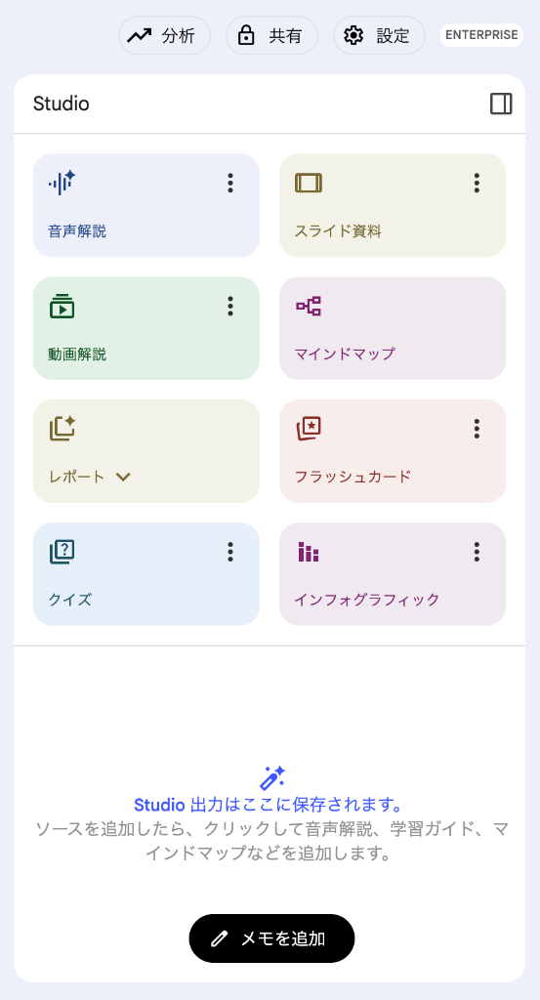

情報の分断や専門部署への依頼待ちをなくし、誰もが AI との対話だけで社内の知見と基幹データを即座に引き出せる世界を体験します。従来は数日〜数週間かかっていた「情報収集・社内調査・データ突合分析・経営会議資料の作成」を、わずか数分で完結させる AI 駆動型の業務プロセスを実践しましょう。
本日のタイムテーブル
| パート / 時間 | テーマ | 体験内容 |
|---|---|---|
| 導入 5分 |
Gemini Enterprise ログイン＆画面確認 | Gemini Enterprise Web アプリへログインし、出力言語を日本語に設定して、チャット欄・エージェントの画面構成を確認します。 |
| シナリオ 1 15分 |
【Gemini Notebook】 経営戦略・業界動向のインプットと要点整理 |
① 統合報告書と決算・IR資料のURLを追加し、音声解説とスライド資料を生成 ② 生成の待ち時間に、2資料を横断して戦略・財務・事業機会をQA ③ 完成したスライド資料の閲覧と音声解説を試聴 |
| シナリオ 2 12分 |
【GE + GWS横断検索】 大口取引先の状況把握と社内規程の確認 |
大口取引先「東都ロジスティクス」からの支払期日延長相談について、営業部の相談メール記録・審査部チャット・債権管理規程PDFを一括検索し、経緯と決裁基準を一覧表に自動整理します。 |
| シナリオ 3 10分 |
【GE + AIエージェント】 未収データ分析と経営会議レポート作成 |
① @請求・入金・与信分析 で月次回収率推移と未収リスク業種・ランクをグラフ化 ② 要注意法人トップ10社の特定と、今後半年間の将来予測＆対策シミュレーション ③ シナリオ2の経緯と統合し、経営会議レポートと報告スライドを出力 |
| 自由探索 10分 |
【4部門エージェント応用】 | コールセンター・人事・営業マーケの各データ分析エージェントで、散布図・円グラフ・ツリーマップなど多彩な可視化を試します。 |
Step 1-1：Gemini Enterprise へのログイン
- 下のボタンから Gemini Enterprise Web アプリ を開きます。
- ログイン画面が表示されたら、講師から配布された ID（
student-xx-xxxxxxxxxxxx@qwiklabs.net） と パスワード でログインします。
ログイン後、画面中央にチャット入力欄、左メニューに「エージェント（Agents）」が表示されていることを確認します。
※ Gemini Notebook は初期状態では左メニューに表示されません。シナリオ1で一度開くと、以降は左メニューに表示されます。
Step 1-2：出力言語を日本語に設定
回答が英語で返ってこないよう、最初に出力言語を設定します。
- 画面右上の 「⚙️（設定）」 をクリックします。
- 「Output Language（出力言語）」 で 「日本語」 を選択します。
統合報告書や決算・IR資料を Gemini Notebook に投入し、音声解説・スライド資料の自動生成と、複数資料を横断した引用付きQAを体験します。
Step 1-1：Notebook の新規作成とソースの追加
- 左メニューの 「エージェント（Agents）」 から 「Gemini Notebook」 を選択して開き、［＋ 新規作成］をクリックします（一度開くと、以降は左メニューに「Gemini Notebook」が直接表示されます）。
- ソース追加画面で 「ウェブサイト」 を選択します。
- 以下の2つの資料の ［URLをコピー］ ボタンをクリックし、URLを貼り付けてソースに追加します。
Step 1-2：音声解説とスライド資料の生成
画面右側の Studio パネル から、① 音声解説 → ② スライド資料 の順に生成を開始します。

① 音声解説の生成
「音声解説」（図①） をクリックすると「音声解説をカスタマイズ」のポップアップが表示されます。言語が 「日本語」 になっていることを確認し、長さで 「短め」 を選択して ［生成］ をクリックします（下の入力欄は空欄のままで構いません）。
② スライド資料の生成
続けて 「スライド資料」（図②） をクリックします。カスタマイズなしでそのまま自動生成が始まります。
Step 1-3：2資料を横断したQA
音声解説とスライド資料が生成されている間に、中央のチャット欄に以下のプロンプトを貼り付けて、さまざまな切り口から2つの資料を横断分析してみましょう。
Step 1-4：音声解説とスライド資料の確認
右側 Studio パネルの下部に 音声解説 と スライド資料 が完成したら、クリックして日本語対談番組の試聴やスライドの閲覧を行います。
大口取引先の東都ロジスティクス株式会社から「支払期日を翌月末から翌々月末へ延長してほしい」という特例相談が発生したシチュエーションです。
情報がメール・チャット・規程PDFのどこにあるか意識せず、同僚に話しかけるような短い一言ずつで状況を深掘りし、最後に一覧表へ整理させます。
営業部からの相談メールは社内文書（メール記録）として、審査部・債権管理室の議論は Google Chat のスペースとして用意されています。プロンプト実行時に Google Chat などの ［承認（Authorize）］ ボタンが表示された場合は、クリックしてアクセスを許可してください。
Step 2-1：まずは取引先からの相談経緯を聞く
- 左メニューの 「新しいチャット」 をクリックしてメインチャット画面に戻ります。
- まずは以下の短いプロンプトをコピーして送信し、どんな相談が来ているか確認します。
Step 2-2：審査部や現場でどう議論されているか聞く
営業部からの相談メールの内容がわかったら、続けて社内チャットで現場がどう受け止めているかを質問します。
Step 2-3：社内規程と照らし合わせて一覧表にまとめさせる
最後に、社内規程上の決裁基準や新規回線増設の可否を確認し、ここまでの情報とあわせて表に整理させます。
- これまでの経緯（Step 2-1）：東都ロジスティクスは契約4,850回線・月間請求額約4,800万円の大口契約先。直近6ヶ月で2回の入金遅延があり、与信ランクは「C1（要注意）」。燃料費高騰等を理由に、支払期日を翌月末（30日サイト）から翌々月末（60日サイト）へ延長したいと要請。
- 現場の懸念点（Step 2-2）：物流・建設セクターのランクC1/C2法人から、同種の支払サイト延長相談が他に6社相次いでいる。個人回線でも、紙の払込票に切り替わった層の未収率が14.8%に上昇。
- 決裁権限者（Step 2-3／規程第14条）：「月間請求額3,000万円以上」または「直近6ヶ月で2回以上遅延した要注意先（C1/C2）」は、審査部長とビリング事業本部長の合議のうえ経営会議（またはリスク管理委員会）への付議・承認が必須。同社は両方に該当する。
- 新規回線増設の取り扱い（Step 2-3／規程第18条）：支払猶予の相談を受理した時点で、車載IoT回線800回線の追加などの新規増設は原則全面凍結。あわせて与信限度額の20%圧縮と、前受保証金（月間請求額の1ヶ月分以上）またはファクタリング（売掛債権保証）の付保が経営会議付議の前提条件となる。
シナリオ2で「物流・建設セクターで同様の遅延相談が増えている」という現場の懸念が判明しました。
ここでは データ分析エージェント（@請求・入金・与信分析） を呼び出し、「① 請求データ」「② 入金・消込データ」「③ 顧客与信マスタ」の3つのデータを日本語で掛け合わせて分析・将来予測し、そのまま経営会議レポートとプレゼンスライドを作成します。
シナリオ2を実行した同じメインチャットの入力欄で半角の
@ を入力し、候補から @請求・入金・与信分析 をクリックして選択したあと、下のプロンプトをコピーして貼り付けます。初回の呼び出し時にエージェントの ［承認（Authorize）］ ボタンが表示された場合は、クリックしてアクセスを許可してください。
Step 3-1：全体傾向の把握
まずは全社の月次請求・入金・回収率の推移と、どの業種・与信ランクに未収リスクが集中しているかを可視化します。グラフが確実に生成されるよう、2つのプロンプトに分けて順番に送信します。
Step 3-2：要注意の大口取引先トップ10社の特定
回収率が4月の 98.80% から9月に 93.80% へ低下し、物流・建設セクターの要注意層（C1/C2）に未収が集中していることが分かりました。続けて同じチャットで、要注意の大口取引先トップ10社を抽出します。
Step 3-3：将来値の予測と対策シミュレーション
実績データの把握だけでなく、「このまま放置したら半年後に未収がどこまで膨らむか」の将来予測と、「与信枠見直し・債権保全を行った場合の改善シミュレーション」を日本語の指示だけで一気に出力させます。
Step 3-4：経営会議レポートと報告スライドの出力
最後に、シナリオ2で確認した東都ロジスティクスの経緯・決裁基準と、シナリオ3の全社データ分析・将来予測結果を統合し、経営会議に付議するレポートとプレゼンスライドを作成します。
(A) 統合レポートの作成
- 入力欄に前のプロンプトの @請求・入金・与信分析 が残っている場合は、チップの ［✕］ をクリックして外します（ここでは
@メンションは不要です）。 - メインチャットの入力欄に、以下の「① 経営会議向け 統合対策レポート作成プロンプト」を貼り付けて実行します。
- レポートが生成されたら、回答下部のアイコンから ［PDF 形式でダウンロード］ を選択して保存します。
(B) 報告用スライドの作成
- 同じチャット入力欄の下部にある ［ツール］→［Canvas］ を選択して、Canvas を有効にします。
- 以下の「② 経営会議報告用スライド生成プロンプト」を貼り付けて送信します。
- 右側の Canvas ペインに生成されたスライドを確認し、右上の ［エクスポート］ から ［PDF］ または ［PowerPoint（PPTX）］ を選択して保存します。
本日のハンズオン環境には、シナリオ3で使用した「🏦 ① 請求・入金・与信分析」に加え、「🎧 ② コールセンター分析」「👥 ③ 人事・タレント分析」「📈 ④ 営業・マーケROI分析」の計4つの部門別データ分析エージェントが構築されています。
お時間のある方は、気になる部門のエージェントを @ メンションから呼び出し、散布図・円グラフ・ツリーマップ・複合チャート・積み上げ面グラフなど多彩な可視化をお試しください。
応用体験 ①：🎧 コールセンター分析（@コールセンター分析）
入電ログ・オペレーター応対履歴・顧客満足度アンケートの3テーブルを掛け合わせ、応対品質と放棄呼のボトルネックを可視化します。
応用体験 ②：👥 人事・タレント分析（@人事・タレント分析）
社員マスタ・月次勤怠・エンゲージメント調査の3テーブルを掛け合わせ、残業とエンゲージメント・離職リスクの相関や組織別コスト構造を可視化します。
応用体験 ③：📈 営業・マーケROI分析（@営業・マーケROI分析）
マーケティング施策・見込み客リード・商談パイプラインの3テーブルを掛け合わせ、広告投資対効果とチャネル別商談推移を可視化します。
@ メンションは不要です。残っている場合はチップの［✕］で外します）。